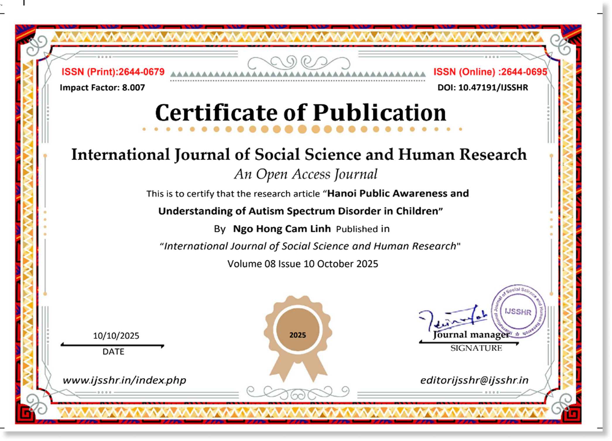
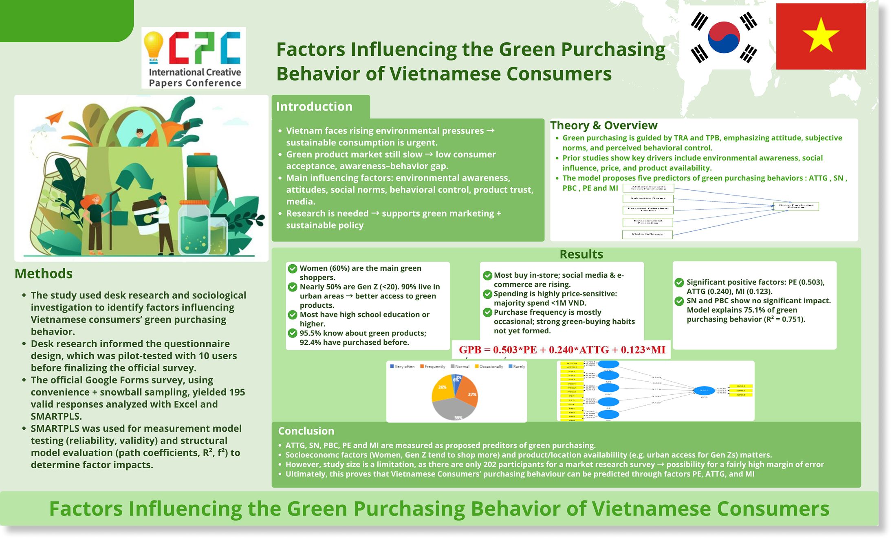
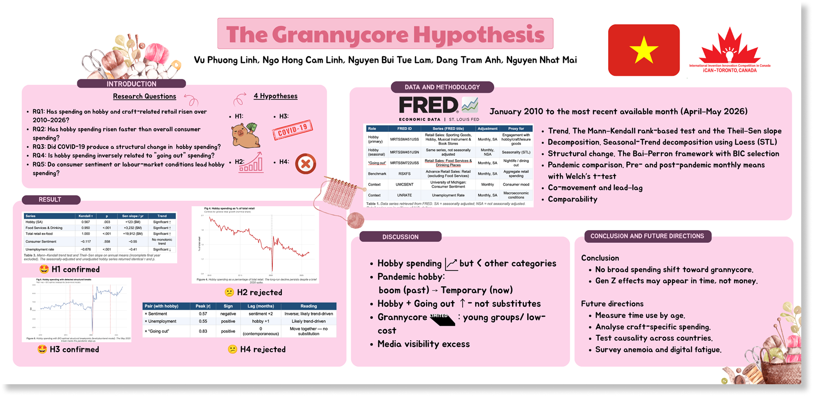
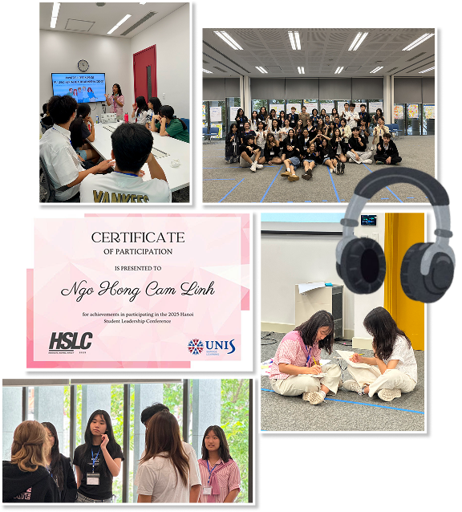
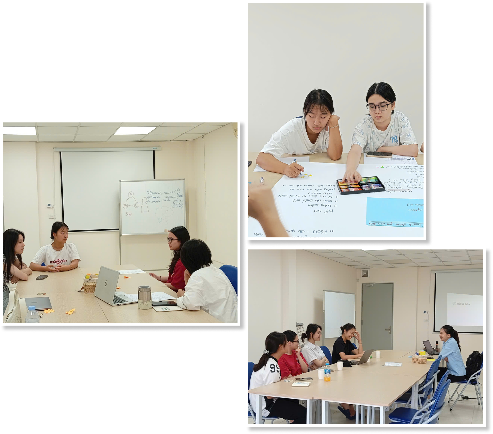
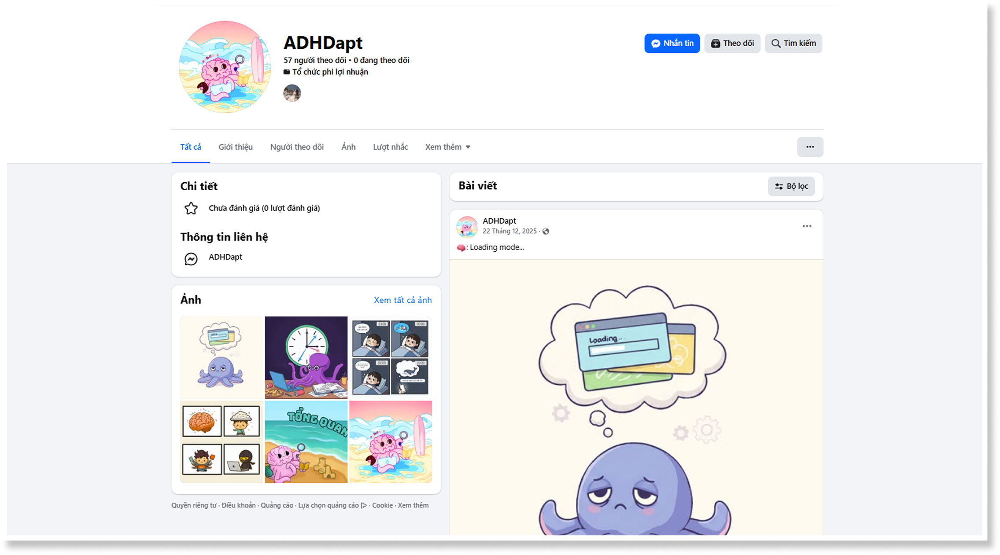
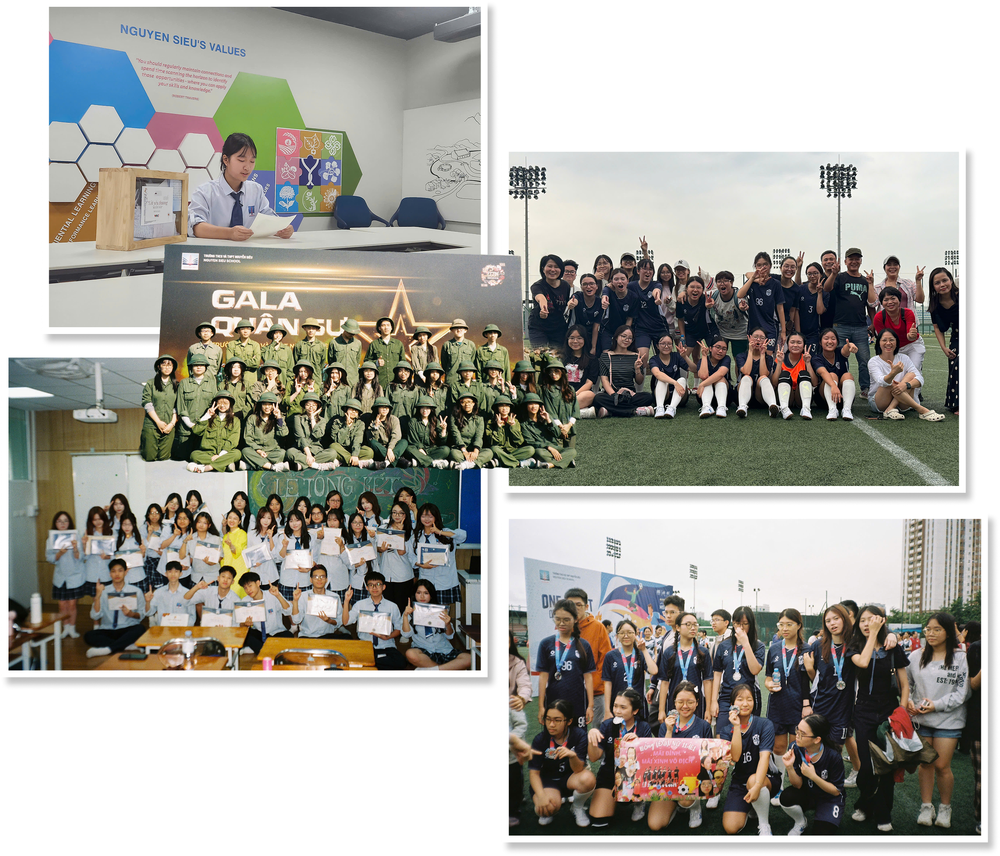

Hanoi Public Awareness and Understanding of Autism Spectrum Disorder in Children.
Research Article | This was my first step in research, my first step in designing the survey, and my first step in analyzing the data.
View Essay
Research Article | This was my first step in research, my first step in designing the survey, and my first step in analyzing the data.
View Essay
I took a closer look at what makes Vietnamese consumers go green, and discovered that every shopping choice has a story behind it.

As a Gen Z, I am curious to discover some reasons why grannycore hobbies are popular among young people.

This participation brought me leadership lessons, international friendships, and the exciting challenge of running my own small psychology workshop in about 35 minutes.

I learned about some basic concepts of psychology through writing short reports and small presentations. Also, I tried role-playing different roles in a psychological case.

I helped create self-assessment tools, educational resources, and wrote blogs for better understanding of ADHD.
Facebook website
Being a class monitor for 3 years has taught me that leadership is not about handling everything myself. It is about doing things together!
